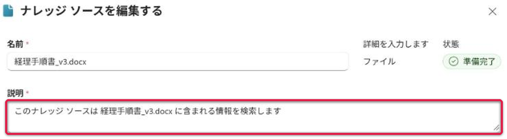
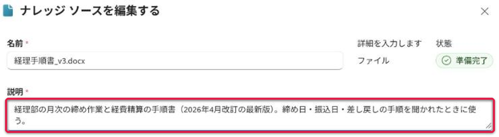

<!DOCTYPE html>
<html lang="ja">
<head>
<meta charset="UTF-8">
<meta name="viewport" content="width=1280, initial-scale=1">
<title>コパスタ Vol.25-3 実際の画面：ナレッジの説明</title>
<link rel="preconnect" href="https://fonts.googleapis.com">
<link rel="preconnect" href="https://fonts.gstatic.com" crossorigin>
<link href="https://fonts.googleapis.com/css2?family=Noto+Sans+JP:wght@400;500;700;900&display=swap" rel="stylesheet">
<link rel="stylesheet" href="../_base/cs-base.css">
<style>
  .body{gap:14px;padding-bottom:0;}
  .shotcol{flex:0 0 900px;max-width:900px;min-width:0;min-height:0;display:flex;flex-direction:column;gap:6px;}
  .real{flex:0 0 auto;align-self:flex-start;font-size:15px;font-weight:900;color:#fff;background:var(--cs);border-radius:999px;padding:3px 14px;}
  .shots{flex:1;min-height:0;display:flex;gap:10px;}
  .colA{flex:1;min-width:0;display:flex;flex-direction:column;gap:8px;}
  .colB{flex:0 0 420px;gap:8px;min-width:0;display:flex;flex-direction:column;}
  .shot{flex:1;min-height:0;min-width:0;background:#fff;border:2.5px solid var(--cs-line);border-radius:12px;overflow:hidden;display:flex;
    align-items:center;justify-content:center;box-shadow:0 4px 10px rgba(91,33,182,.15);position:relative;padding-top:26px;}
  .shot img{width:100%;height:100%;object-fit:contain;display:block;}
  .lab{position:absolute;left:7px;top:5px;font-size:14px;font-weight:900;color:#fff;background:#E11D48;border-radius:7px;padding:2px 9px;z-index:2;}
  .s1{flex:0 0 auto;} .s1 img{height:auto;}
  .s2{flex:1;}
  .s0{flex:1;}
  .steps{flex:1;min-width:0;display:flex;flex-direction:column;gap:8px;}
  .st{flex:1;min-height:0;display:flex;gap:10px;align-items:center;background:#fff;border:2.5px solid var(--cs-line);border-radius:12px;padding:6px 11px;}
  .st .n{flex:0 0 auto;width:34px;height:34px;border-radius:10px;color:#fff;display:flex;align-items:center;justify-content:center;font-weight:900;font-size:19px;
    background:linear-gradient(135deg,#7C3AED,#C026D3);}
  .st .t{font-size:18px;font-weight:900;color:var(--navy);line-height:1.3;}
  .st .t b{color:var(--cs);}
  .st .t small{display:block;font-size:14.5px;font-weight:700;color:#4B5563;line-height:1.36;margin-top:1px;}
  .st.hint{background:#FFFBEB;border-color:#F59E0B;}
  .st.hint .n{background:linear-gradient(180deg,#FBBF24,#D97706);}
  .nextbar{flex:0 0 auto;margin:10px 18px 22px;display:flex;align-items:center;gap:12px;background:var(--cs-bg);border:2px solid var(--cs-line);
    border-radius:12px;padding:8px 18px;font-size:19px;font-weight:900;color:var(--cs-dark);}
  .nextbar .msi{width:28px;height:28px;}
  .src2{position:absolute;left:20px;bottom:5px;font-size:11.5px;font-weight:500;color:#9CA3AF;}
</style>
</head>
<body>
<div id="slide"></div>
<script>
const A="../../pptx/_assets/";
document.getElementById('slide').innerHTML=`
  <div class="titlebar">
    <div class="vol-pill">コパスタ Vol.25</div>
    <div class="part-pill">実際の画面 <b>(3/4)</b></div>
    <div class="title-text">資料をクリックすると<br><span class="q">「説明」</span>を書き直せる</div>
    <div class="ibadge"><span class="pl">+</span></div>
    
  </div>

  <div class="concl">
    <div class="chip">実機</div>
    <div class="txt">右のパネルの<b>ナレッジ</b>に並ぶ資料をクリックすると「ナレッジ ソースを編集する」が開く。<br>
      入れたままの説明は<em>ファイル名を入れただけの1文</em>になっている。</div>
  </div>

  <div class="body">
    <div class="shotcol">
      <div class="real">実際の画面（2026年11月・Copilot Studio）</div>
      <div class="shots" style="flex-direction:column">
        <div class="shot"><span class="lab">① 入れたままの説明</span></div>
        <div class="shot"><span class="lab">② 何の資料で、いつ使うかを書いた</span></div>
      </div>
    </div>
    <div class="steps">
      <div class="st"><span class="n">1</span><span class="t">ナレッジの<b>資料</b>をクリック<small>作成タブの右のパネル</small></span></div>
      <div class="st"><span class="n">2</span><span class="t"><b>説明</b>を書き直す<small>何の資料か・いつ使うか</small></span></div>
      <div class="st"><span class="n">3</span><span class="t"><b>保存</b>して公開<small>名前も重ならないように</small></span></div>
      <div class="st"><span class="n">4</span><span class="t">古い版は<b>外す</b><small>資料名の × で外せる</small></span></div>
      <div class="st hint"><span class="n">!</span><span class="t">状態が「準備完了」か<small>右上の表示で確かめる</small></span></div>
    </div>
  </div>

  <div class="nextbar">→ 資料そのものの注意（更新・サイズ・読めない資料）は4枚目へ</div>
  <div class="src2">出典：Microsoft Learn（ナレッジ ソースを編集する）／撮影は 2026年11月の Copilot Studio（PA45 Demo 環境）・②は入力だけして保存していない</div>
`;
</script>
</body>
</html>
